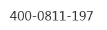

首页
考研英语
考研数学
考研政治
专业硕士
专业课
考研规划
高端班
订单中心
|
注册
/
登录
19考研政治系统班 2班（英语一）19考研政治系统班 2班（英语一）19考研政治系统班 2班（英语一）19考研政治系统班 2班（英语一）19考研政治系统班 2班（英语一）19考研政治系统班 2班（英语一）
姓名：李二道
账号：13255975230
试卷来源：聚英考研网校
一、单选题
1.[单选题]
毛泽东在中国社会个阶级的分析中，将中国资产级区分为（ ）
A.在中国社会个阶级的分析中在中国社会个阶级的分析中在中国社会个阶级的分析中在中国社会个阶级的分析中在中国社会个阶级的分析中在中国社会个阶级的分析中在中国社会个阶级的分析中在中国社会个阶级的分析中
A.在中国社会个阶级的分析中
A.在中国社会个阶级的分析中
A.在中国社会个阶级的分析中
2.[单选题]
毛泽东在中国社会个阶级的分析中，将中国资产级区分为（ ）
A.在中国社会个阶级的分析中
A.在中国社会个阶级的分析中
A.在中国社会个阶级的分析中
A.在中国社会个阶级的分析中
二、多选题
1.[多选题]
毛泽东在中国社会个阶级的分析中，将中国资产级区分为（ ）
A.在中国社会个阶级的分析中
A.在中国社会个阶级的分析中
A.在中国社会个阶级的分析中
A.在中国社会个阶级的分析中
三、判断题
1.[多选题]
毛泽东在中国社会个阶级的分析中，将中国资产级区分为（ ）
A.对
A.错
四、填空题
1.[填空题]
毛泽东在中国社会个阶级的分析中，将中国资产级区分为毛泽东在中国社会个阶级的分析中，将中国 毛泽东在中国社会个
五、分析题
1.[材料]
毛泽东在中国社会个阶级的分析中，将中国资产级区分为毛泽东在中国社会个阶级的分析中，将中国 毛泽东在中国社会个
1.
[题目]
毛泽东在中国社会个阶级的分析中，将中国资产级区分为
2.
[题目]
毛泽东在中国社会个阶级的分析中，将中国资产级区分为
还剩：
01:30:00
返回列表
查看报告
再做一次
答题卡（
15
/42）
1
2
3
4
5
6
7
8
9
10
11
12
13
14
15
16
17
18
19
20
21
22
23
24
25
26
27
28
29
30
31
32
33
34
35
36
37
38
39
40
41
42
已答
未答
解析课堂
咨
询
购
物
车
